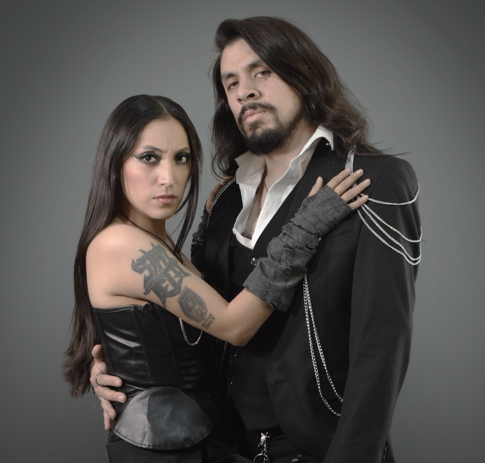

ARYEM – AGNES:
EL PELIGRO DE VOLVERSE HUMANO

Tras cinco años desde su anterior producción, la agrupación capitalina de metal sinfónico regresa con su propuesta musical más madura, ambiciosa y elogiada. No estamos ante la banda sonora de una película; estamos ante la película misma, y es un filme psicológico brutal.
El concepto de Agnes (la hija de un dios que cae a la Tierra) funciona como un experimento de aislamiento espacial. Al igual que en la película Gravity, el álbum te sumerge en el terror de la desconexión absoluta. La voz de Karen Mendoza suena herida, extrañada y asombrada, presenciando cómo un ser perfecto se contamina de nuestros peores defectos: la duda, el desamor y la soledad.
SABOTAJE DE GÉNEROS: EL CAOS COMO DECISIÓN
Lo valioso de Agnes es que Aryem se atreve a ser "irrespetuoso" con las reglas del metal. En temas como "Do You Feel Worthless Yet?", el metal se deforma para dejar entrar acordes de Jazz y Swing, como si la protagonista perdiera la cabeza en un club nocturno de los años 30.

5 TRACKS ESENCIALES
- DO YOU FEEL WORTHLESS YET?: La locura disfrazada de elegancia y swing decadente.
- SELLOUT: El quiebre moderno con agresividad industrial y guturales feroces.
- SON DEL ALMA: Clímax cultural fusionado con el Mariachi Los Mexiquenses de Tultepec.
- HOLDING ON: Vulnerabilidad absoluta en una balada orquestal cinematográfica.
- IN THE NAME OF GOD: El cierre épico y de gran envergadura orquestal.
TRACKLIST: AGNES
- 01. Overture: The Descent / 02. Fallen Angel / 03. Do You Feel Worthless Yet?
- 04. Sellout / 05. Broken Mirror / 06. Son del Alma
- 07. Interlude: The Human Cage / 08. Holding On / 09. Shadows of the Mind
- 10. You Won't Miss Me / 11. The Price of Flesh
- 12. In the Name of God / 13. Epilogue: Ashes of a Deity / 14. Requiem for Agnes
Agnes es un espejo incómodo de nuestra propia neurosis diaria. Es la crónica de cómo la Tierra es capaz de corromper —y al mismo tiempo salvar— a cualquiera. Una obra de madurez total.